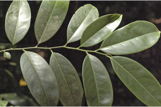
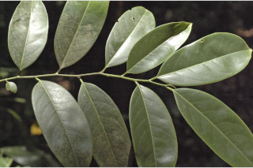
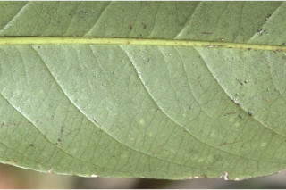
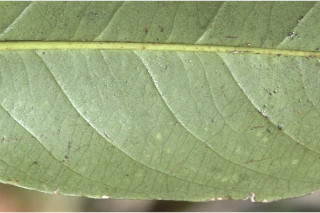
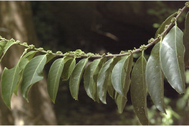
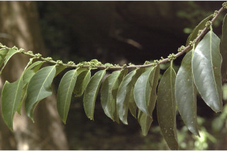

Trees up to 15 m tall.
15 ಮೀ. ಎತ್ತರದವರೆಗಿನ ಮರಗಳು.
Trees up to 15 m tall.
மரங்கள் 15 மீ. உயரம் வரை வளரக்கூடியது.
Bark greenish, smooth; blaze light orange.
ತೊಗಟೆ ಹಸಿರು ಬಣ್ಣದಲ್ಲಿದ್ದು ನಯವಾಗಿರುತ್ತದೆ;ಕಚ್ಚು ಮಾಡಿದ ಜಾಗ ತೆಳು ಕಿತ್ತಳೆ ಬಣ್ಣದಲ್ಲಿರುತ್ತದೆ.
Bark greenish, smooth; blaze light orange.
மரத்தின் பட்டை பச்சை நிறமானது, வழவழப்பானது; உள்பட்டை வெளிறிய ஆரஞ்ச் நிறமானது.
Branchlets terete, glabrous.
ಕಿರುಕೊಂಬೆಗಳು ದುಂಡಾಗಿದ್ದು ರೋಮರಹಿತವಾಗಿರುತ್ತವೆ.
Branchlets terete, glabrous.
சிறியநுனிக்கிளைகள் குறுக்குவெட்டுத் தோற்றத்தில் வளையமானது, உரோமங்களற்றது.
Leaves simple, alternate, distichous; stipule caducous; petiole 0.4-0.9 cm long, canaliculate, glabrous; lamina 5-15 x 2.5-6.4 cm, narrow elliptic to elliptic-ovate, apex acuminate, acumen usually twisted, base attenuate or subacute, margin entire or serrate, chartaceous, glabrous, with pellucid transparent dots and lines; midrib flat above; secondary_nerves 6-10 pairs; tertiary_nerves broadly reticulate.
ಎಲೆಗಳು ಸರಳವಾಗಿದ್ದುಪರ್ಯಾಯ ಜೋಡನಾ ವ್ಯವಸ್ಥೆಯಲ್ಲಿದ್ದು ಕಾಂಡದ ಎರಡೂ ಕಡೆ ಎದುರು ಬದರಿನ ಲಂಬ ಸಾಲಿನಲ್ಲಿರುತ್ತವೆ;ಕಾವಿನೆಲೆಗಳು ಉದುರಿ ಹೋಗುವ ಮಾದರಿಯವು; ತೊಟ್ಟುಗಳು ಅಂದಾಜು 0.4 – 0.9 ಸೆಂ.ಮೀ. ಉದ್ದ ಹೊಂದಿದ್ದು ಕಾಲುವೆಗೆರೆ ಸಮೇತವಿದ್ದು ರೋಮರಹಿತವಾಗಿರುತ್ತವೆ; ಪತ್ರಗಳು 5 – 15 X 2.5 – 6.4 ಸೆಂ.ಮೀ. ಗಾತ್ರವಿದ್ದು ಸಂಕುಚಿತ ಅಂಡವೃತ್ತ ದಿಂದ ಅಂಡವೃತ್ತ-ಅಂಡದ ಆಕಾರದಲ್ಲಿದ್ದು,ಸಾಮಾನ್ಯವಾಗಿ ತಿರುವಿಕೊಂಡಿರುವ ತೀಕ್ಣಾಗ್ರವುಳ್ಳ ಕ್ರಮೇಣ ಚೂಪಾಗುವ ತುದಿ, ಒಳಬಾಗಿದ ಅಥವಾ ಉಪ-ಚೂಪಾದ ಬುಡ,ನಯವಾದ ಅಥವಾ ಗರಗಸ ದಂತಿತವಾದ ಅಂಚು ಹೊಂದಿದ್ದು ಪತ್ರ ರೋಮರಹಿತವಾಗಿದ್ದು,ಪ್ರಕಾಶ ಭೇಧ್ಯ ಹಾಗೂ ಪಾರದರ್ಶಕವಾದ ಚುಕ್ಕೆ ಮತ್ತು ಗೆರೆಗಳಿಂದ ಕೂಡಿದ ಕಾಗದವನ್ನೋಲುವ ಮೇಲ್ಮೈ ಹೊಂದಿರುತ್ತವೆ;ಮಧ್ಯ ನಾಳ ಮೇಲ್ಭಾಗದಲ್ಲಿ ಚಪ್ಪಟೆಯಾಗಿರುತ್ತದೆ; ಎರಡನೇ ದರ್ಜೆಯ ನಾಳಗಳು 6 ರಿಂದ 10 ಜೋಡಿಗಳಿರುತ್ತವೆ;ಮೂರನೇ ದರ್ಜೆಯ ನಾಳಗಳು ವಿಶಾಲ ಜಾಲಬಂಧ ನಾಳವಿನ್ಯಾಸವನ್ನು ಹೊಂದಿರುತ್ತವೆ.
Leaves simple, alternate, distichous; stipule caducous; petiole 0.4-0.9 cm long, canaliculate, glabrous; lamina 5-15 x 2.5-6.4 cm, narrow elliptic to elliptic-ovate, apex acuminate, acumen usually twisted, base attenuate or subacute, margin entire or serrate, chartaceous, glabrous, with pellucid transparent dots and lines; midrib flat above; secondary_nerves 6-10 pairs; tertiary_nerves broadly reticulate.
இலைகள் தனித்தவை, மாற்றுஅடுக்கமானவை, இருநெடுக்கு வரிசையிலையடுக்கம் (டைஸ்டிக்கஸ்); எளிதில் உதிரக்கூடியவை ; இலைக்காம்பு 0.4-0.9 செ.மீ. நீளமானது, குறுக்குவெட்டுத் தோற்றத்தில் கேனாலிகுலேட், உரோமங்களற்றது; இலை அலகு 5-15 X 2.5-6.4 செ.மீ., குறுகிய நீள்வட்ட வடிவானது முதல் நீள்வட்டம்-முட்டை வடிவானது, அலகின் நுனி அதிக்கூரியதுடன் முனை திருகியது, அலகின் தளம் அட்டனுவேட் அல்லது கூரியது, அலகின் விளிம்பு முழுமையானது அல்லது ரம்ப பற்களுடையது, சார்ட்டேசியஸ், உரோமங்களற்றது, ஒளிபுகும் சுரப்பி புள்ளி மற்றும் கோடுகளுடையது; மையநரம்பு மேற்பரப்பில் அலகின் பரப்பிற்கு சமமானது; இரண்டாம் நிலை நரம்புகள் 6-10 ஜோடிகள்; மூன்றாம் நிலை நரம்புகள் அகன்ற வலைப்பின்னல் போன்றவை.
Flowers in axillary fascicles, glabrous, white.
ಹೂಗಳು ಅಕ್ಷಾಕಂಕುಳಿನಲ್ಲಿರುವ ಗುಛ್ಛದಲ್ಲಿದ್ದು ಬಿಳಿ ಬಣ್ಣವನ್ನು ಹೊಂದಿರುತ್ತವೆ.
Flowers in axillary fascicles, glabrous, white.
மலர்கள் இலைக்கோணங்களில் கூட்டமாக காணப்படுபவை, உரோமங்களற்றது, வெள்ளை நிறமானது.
Capsule, 2-3 valved, subglobose to ellipsoid, orange when ripe; seeds many with arils.
ಸಂಪುಟ ಫಲಗಳು 2 ರಿಂದ ಮೂರು ಕೋಣೆಗಳ ಸಮೇತವಿರುತ್ತವೆ ಮತ್ತು ಉಪ-ದುಂಡಾಕಾರದಿಂದ ಅಂಡವೃತ್ತದವರೆಗಿನ ಆಕಾರ ಹೊಂದಿದ್ದು ಕಿತ್ತಳೆ ಬಣ್ಣದಲ್ಲಿರುತ್ತವೆ; ಬೀಜಗಳು ಹೆಚ್ಚಿನ ಸಂಖ್ಯೆಯಲ್ಲಿದ್ದು ಪತ್ರೆ ಸಮೇತವಾಗಿರುತ್ತವೆ.
Capsule, 2-3 valved, subglobose to ellipsoid, orange when ripe; seeds many with arils.
வெடிகனி (கேப்சியூல்), 2-3 அறைகளுடையது, கோளவடிவானது முதல் நீள்வட்ட வடிவானது, கனியும் போது ஆரஞ்ச் நிறமானது; விதைகள் எண்ணற்றவை, பத்ரி (ஏரில்) உடையது.


 



 

 
